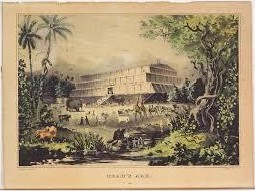

In the story of the Flood, P (the Priestly source) and J (the Yahwist source) differ in the number of animals to be brought onboard, and how long the flood lasted. Here the two stories are separated:
“P” Flood Numbers
6:19 And of every living thing of all flesh, two of every sort shalt thou bring into the ark, to keep them alive with thee; they shall be male and female. 20 Of fowls after their kind, and of cattle after their kind, of every creeping thing of the earth after his kind, two of every sort shall come unto thee, to keep them alive...7:11 In the six hundredth year of Noah's life, in the second month, the seventeenth day of the month, the same day were all the fountains of the great deep broken up, and the windows of heaven were opened. 24 And the waters prevailed upon the earth an hundred and fifty days… 8:3 and after the end of the hundred and fifty days the waters were abated. 4 And the ark rested in the seventh month, on the seventeenth day of the month, upon the mountains of Ararat. 5 And the waters decreased continually until the tenth month: in the tenth month, on the first day of the month, were the tops of the mountains seen. 13 And it came to pass in the
six hundredth and first year, in the first month, the first day of the month, the waters were dried up from off the earth: 14 And in the second month, on the seven and twentieth day of the month, was the earth dried. (=376 days)

“J” Flood Numbers
7:2 Of every clean beast thou shalt take to thee by sevens, the male and his female: and of beasts that are not clean by two, the male and his female. 3 Of fowls also of the air by sevens, the male and the female; to keep seed alive upon the face of all the earth. 4 For yet seven days, and I will cause it to rain upon the earth forty days and forty nights… 8:6 And it came to pass at the end of forty days, that Noah opened the window of the ark which he had made:
7 And he sent forth a raven, which went forth to and fro, until the waters were dried up from off the earth. 8 Also he sent forth a dove from him, to see if the waters were abated from off the face of the ground; 9 But the dove found no rest for the sole of her foot, and she returned unto him into the ark, for the waters were on the face of the whole earth: then he put forth his hand, and took her, and pulled her in unto him into the ark. 10 And he stayed yet other seven days; and again he sent forth the dove out of the ark; 11 And the dove came in to him in the evening; and, lo, in her mouth was an olive leaf pluckt off: so Noah knew that the waters were abated from off the earth. 12 And he stayed yet other seven days; and sent forth the dove; which returned not again unto him any more. 13… and Noah removed the covering of the ark, and looked, and, behold, the face of
the ground was dry. (= 61 days, calculating seven days after the raven, because in verse 10 he says “other” = “another” seven days; otherwise, 54 days.)
Rebuttal: The mediaeval Jewish commentator, Rashi, explains that what scripture means is that a pair of all “unclean” - ritually impure - animals is meant and 7 pair of ritually “clean” animals.
~~~~~~~